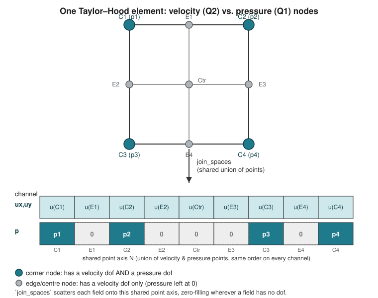

Tutorial: a Neural Operator surrogate for parametric Stokes flow
This is a short companion to the Poisson tutorial, which it assumes you have read: the parameter space, ParamFunction/ parameterise, InputSpace/OutputSpace, KernelNeuralModel, and the FunctionSpace/GraphInducedSpace pair of InducedMeasures are all unchanged here. This tutorial only calls out what is genuinely different about a multi-field, vector-valued problem: Taylor-Hood Stokes.
\[-\nabla\cdot(a(\mu)\nabla u) + \nabla p = 0, \qquad \nabla\cdot u = 0 \ \text{in } \Omega, \qquad u = g(\mu) \ \text{on } \Gamma_D.\]
u (velocity, quadratic) and p (pressure, linear) are the two fields; the parameter $\mu\in\mathbb R^3$ controls the viscosity-like coefficient a(μ) and the inflow profile g(μ).
using DrWatson
using Gridap
using GridapROMs
using GridapROMs.RBSteady
using Lux
using NonlinearROMs
pdomain = (1,10,-1,5,1,2)
pspace = ParamSpace(pdomain)
L,H = 1,1
N = 8
domain = (0,L,0,H)
partition = (N,N)
model = CartesianDiscreteModel(domain,partition)
order = 2
degree = 2*order
Ω = Triangulation(model)
dΩ = Measure(Ω,degree)
a(μ) = x -> μ[1]*exp(-x[1])
aμ(μ) = parameterise(a,μ)
f(x) = VectorValue(0.0,0.0)
g(μ) = x -> VectorValue(-(μ[2]*x[2]+μ[3])*x[2]*(1.0-x[2]),0.0)*(x[1]==0.0)
gμ(μ) = parameterise(g,μ)gμ (generic function with 1 method)1. A MultiFieldFESpace weak form
Nothing here is specific to NonlinearROMs.jl: test/trial are built the usual Gridap way, as a Taylor-Hood pair (quadratic velocity, linear pressure) sharing one triangulation, and stiffness/rhs are the standard saddle-point weak form – ⊙ is a full (Frobenius) tensor contraction, needed because ∇(v) of a vector-valued trial function is a 2nd-order tensor, unlike the scalar Poisson case's ⋅.
stiffness(μ,(u,p),(v,q)) = ∫(aμ(μ)*∇(v)⊙∇(u))dΩ - ∫(p*(∇⋅(v)))dΩ + ∫(q*(∇⋅(u)))dΩ
rhs(μ,(v,q)) = ∫(f⋅v)dΩ
reffe_u = ReferenceFE(lagrangian,VectorValue{2,Float64},order)
reffe_p = ReferenceFE(lagrangian,Float64,order-1)
test_u = TestFESpace(Ω,reffe_u;conformity=:H1,dirichlet_tags=[1,2,3,4,5,6,7])
test_p = TestFESpace(Ω,reffe_p;conformity=:H1)
trial_u = ParamTrialFESpace(test_u,gμ)
trial_p = ParamTrialFESpace(test_p)
test = MultiFieldFESpace([test_u,test_p])
trial = MultiFieldFESpace([trial_u,trial_p])
feop = LinearParamFEOperator(rhs,stiffness,pspace,trial,test)
fesolver = LinearFESolver(LUSolver())
μ_train = realisation(pspace;nparams=50)
uhμ_train = solve(fesolver,feop,μ_train)
μ = realisation(pspace;nparams=1)
uhμ = solve(fesolver,feop,μ)MultiFieldParamFEFunction():
num_cells: 64
DomainStyle: Gridap.CellData.ReferenceDomain()
Triangulation: BodyFittedTriangulation()
Triangulation id: 44673965127106199962. Training tensors for a multi-field problem
get_coords(::MultiFieldFESpace) is the union of each field's own points: velocity (quadratic) has strictly more of them than pressure (linear) – the pressure space's points are a subset of the velocity space's. OutputSpace(::MultiFieldParamFEFunction) builds one OutputSpace per field and reconciles them onto that shared union via join_spaces (channels concatenated field-by-field, zero-filled wherever a field doesn't reach a given point) – entirely transparent here, but worth knowing if you inspect output_space.values directly.
Concretely, for one Taylor-Hood element: velocity (Q2) has a dof at every corner, edge-midpoint and centre node, while pressure (Q1) only has one at the 4 corners. join_spaces lays both fields out over the 9-point union, the velocity channels populated everywhere and the pressure channel populated only at the corners – zero elsewhere:

dir = datadir("stokes")
x = get_coords(test)
features(μ) = FeatureBundle((aμ(μ),gμ(μ)))
input_space(μ) = InputSpace(x,features(μ))
output_space = OutputSpace(uhμ_train)MultipleSpaces{2, OutputSpace{Gridap.MultiField.MultiFieldFESpace{Gridap.MultiField.ConsecutiveMultiFieldStyle, Gridap.FESpaces.UnConstrained, GridapROMs.ParamDataStructures.ConsecutiveParamVector{Float64, Matrix{Float64}}}, Array{Float32, 3}}, Tuple{OutputSpace{GridapROMs.ParamFESpaces.TrialParamFESpace{Gridap.FESpaces.UnconstrainedFESpace{Vector{Float64}, Gridap.FESpaces.CompressedCellConformity{FillArrays.Fill{Int64, 1, Tuple{Base.OneTo{Int64}}}}}}, Array{Float32, 3}}, OutputSpace{GridapROMs.ParamFESpaces.TrialParamFESpace{Gridap.FESpaces.UnconstrainedFESpace{Vector{Float64}, Gridap.FESpaces.NodeToDofGlue{Int32}}}, Array{Float32, 3}}}, Gridap.Arrays.Table{Int64, Vector{Int64}, Vector{Int32}}, Nothing}(OutputSpace{Gridap.MultiField.MultiFieldFESpace{Gridap.MultiField.ConsecutiveMultiFieldStyle, Gridap.FESpaces.UnConstrained, GridapROMs.ParamDataStructures.ConsecutiveParamVector{Float64, Matrix{Float64}}}, Array{Float32, 3}}(MultiFieldFESpace(), Float32[-0.14963593 -0.15859184 … 0.0 0.0; 0.00487744 0.0055410396 … 0.0 0.0; -7.775793 -6.8134494 … -0.82391405 0.039895784;;; -0.20827559 -0.23514551 … 0.0 0.0; 0.0146323405 0.016623078 … 0.0 0.0; -6.4418817 -6.216676 … -0.76781636 0.063643664;;; -0.1688779 -0.16589059 … 0.0 0.0; -0.001625832 -0.0018469753 … 0.0 0.0; -12.264996 -9.506949 … -1.1147943 -0.0033892028;;; … ;;; -0.19678485 -0.19844182 … 0.0 0.0; 0.00090321514 0.0010261479 … 0.0 0.0; -2.6293335 -2.1280751 … -0.2523978 0.0040865876;;; -0.2554245 -0.27499548 … 0.0 0.0; 0.010658116 0.012108185 … 0.0 0.0; -14.31636 -12.854511 … -1.5631332 0.0900301;;; -0.1880604 -0.22554654 … 0.0 0.0; 0.020413028 0.023190202 … 0.0 0.0; -6.6198883 -6.9775352 … -0.8768119 0.09690455]), (OutputSpace{GridapROMs.ParamFESpaces.TrialParamFESpace{Gridap.FESpaces.UnconstrainedFESpace{Vector{Float64}, Gridap.FESpaces.CompressedCellConformity{FillArrays.Fill{Int64, 1, Tuple{Base.OneTo{Int64}}}}}}, Array{Float32, 3}}(TrialParamFESpace(), Float32[-0.14963593 -0.15859184 … -0.10072046 -0.09949497; 0.00487744 0.0055410396 … 0.00032699952 0.00038357696;;; -0.20827559 -0.23514551 … -0.17325856 -0.16958047; 0.0146323405 0.016623078 … 0.000980961 0.0011509226;;; -0.1688779 -0.16589059 … -0.0836109 -0.08402086; -0.001625832 -0.0018469753 … -0.000108965716 -0.00012803324;;; … ;;; -0.19678485 -0.19844182 … -0.10922245 -0.10899664; 0.00090321514 0.0010261479 … 6.0581842f-5 7.089809f-5;;; -0.2554245 -0.27499548 … -0.18176055 -0.17908214; 0.010658116 0.012108185 … 0.00071454333 0.0008382437;;; -0.1880604 -0.22554654 … -0.18680044 -0.1816686; 0.020413028 0.023190202 … 0.0013684852 0.0016056896]), OutputSpace{GridapROMs.ParamFESpaces.TrialParamFESpace{Gridap.FESpaces.UnconstrainedFESpace{Vector{Float64}, Gridap.FESpaces.NodeToDofGlue{Int32}}}, Array{Float32, 3}}(TrialParamFESpace(), Float32[-8.286539 -8.017535 … -0.82391405 0.039895784;;; -5.6684957 -6.8704295 … -0.76781636 0.063643664;;; -15.664456 -12.15144 … -1.1147943 -0.0033892028;;; … ;;; -3.1698465 -2.6409054 … -0.2523978 0.0040865876;;; -14.608387 -14.885134 … -1.5631332 0.0900301;;; -4.5930095 -7.295347 … -0.8768119 0.09690455])), [[1, 2, 3, 4, 5, 6, 7, 8, 9, 10 … 231, 232, 233, 234, 235, 236, 237, 238, 239, 240], [241, 242, 243, 244, 245, 246, 247, 248, 249, 250 … 56, 257, 258, 259, 260, 261, 262, 263, 264, 265]], nothing)3. The training loss: a block energy norm
Unlike the Poisson tutorial's scalar, order-1 space, Taylor-Hood has more than one dof per point (velocity has 2 components), and the two fields live on different point sets (§2). EnergyLoss handles this by assembling one norm per field, H1() for the velocity and L2() for the pressure, each on its own points, extending it by zero to the union of every field's points, and stacking the results block-diagonally, one block per channel.
fspace = FunctionSpace(test)
loss = EnergyLoss(BlockNorm((H1(),L2())),fspace)(::EnergyLoss{SparseArrays.SparseMatrixCSC{Float32, Int64}}) (generic function with 2 methods)4. Test 1 & 2 – same two InducedMeasures as the Poisson tutorial
FunctionSpace(test) and GraphInducedSpace(test) both resolve get_coords(test)'s multi-field union automatically (§2); everything downstream – KernelNeuralModel, NeuralSolver, neural_operator, solve, to_element, visualise – is byte-for-byte the same call pattern as the Poisson tutorial's §8-9, just swapping in loss and the multi-field fspace/gspace.
fmodel = KernelNeuralModel(fspace;hidden_layers=(16,16),activation=tanh)
solver = NeuralSolver(fmodel;epochs=200,loss=loss,print_every=50)
op = neural_operator(solver,input_space(μ_train),output_space)
pred_uμ = solve(solver,op,input_space(μ))
pred_uhμ = to_element(OutputSpace(uhμ),pred_uμ)
visualise(dir,uhμ,pred_uhμ;variable_name="uh_gridap")
mesh_size = 1/(2*N)
gspace = GraphInducedSpace(test;radius=2.4*mesh_size)
gmodel = KernelNeuralModel(gspace;hidden_layers=(16,16),activation=tanh)
solver = NeuralSolver(gmodel;epochs=200,loss=loss,print_every=50)
op = neural_operator(solver,input_space(μ_train),output_space)
pred_uμ = solve(solver,op,input_space(μ))
pred_uhμ = to_element(OutputSpace(uhμ),pred_uμ)
visualise(dir,uhμ,pred_uhμ;variable_name="uh_gno")(["/home/runner/work/NonlinearROMs.jl/NonlinearROMs.jl/docs/data/stokes/plot/uh_gno.vtu"],)visualise writes velocity and pressure as separate CellFields into the same .vtu (see visualise's MultiFieldFEFunction handling), so datadir("stokes")/plot/uh_gridap.vtu opens in ParaView with both fields' true/predicted/error triplets at once. The same receptive-field caveat from the Poisson tutorial's §11 applies unchanged: hidden_layers=(16,16) is one non-local layer, so expect the same qualitative failure mode on this small a network/epoch budget.
This page was generated using Literate.jl.